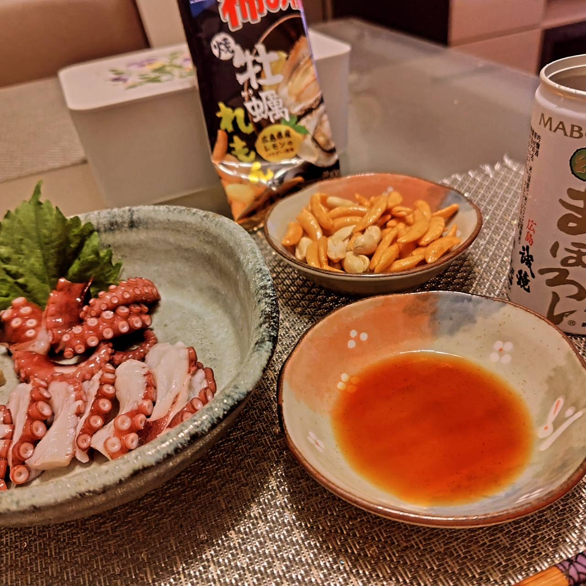

!DOCTYPE html>
<html lang="ja">
<head>
  <meta charset="UTF-8">
  <meta name="viewport" content="width=device-width, initial-scale=1.0">
  <title>タコの茹で方</title>
  <style>
    body {
      margin: 0;
      font-family: 'San Francisco', 'Helvetica Neue', Arial, 'Hiragino Kaku Gothic ProN', Meiryo, sans-serif;
      background: linear-gradient(120deg, #181c22 0%, #23272f 100%);
      color: #1d1d1f;
      animation: bodyFadeIn 1.8s cubic-bezier(.4,2,.6,1);
      position: relative;
      overflow-x: hidden;
    }
    @keyframes bodyFadeIn {
      0% { opacity: 0; }
      100% { opacity: 1; }
    }
    .header {
      background: linear-gradient(120deg, #181c22 0%, #23272f 100%);
      box-shadow: 0 2px 8px rgba(0,0,0,0.04);
      padding: 40px 0 20px 0;
      text-align: center;
      animation: headerSlideDown 1.7s cubic-bezier(.4,2,.6,1);
    }
    @keyframes headerSlideDown {
      0% { opacity: 0; transform: translateY(-80px) scale(0.95); }
      60% { opacity: 1; transform: translateY(10px) scale(1.04); }
      100% { opacity: 1; transform: translateY(0) scale(1); }
    }
    .header h1 {
      font-size: 5.5rem;
      font-weight: 800;
      letter-spacing: 0.08em;
      margin: 0;
      color: #fff;
      text-shadow: 0 2px 12px rgba(180,200,255,0.12);
      line-height: 1.1;
    }
    .header .title-top {
      display: block;
      font-size: 2.2rem;
      font-weight: 700;
      letter-spacing: 0.07em;
    }
    .header .title-bottom {
      display: block;
      font-size: 3.2rem;
      font-weight: 800;
      letter-spacing: 0.08em;
    }
    .container {
      max-width: 1200px;
      margin: 40px auto;
      display: grid;
      grid-template-columns: repeat(auto-fit, minmax(280px, 1fr));
      gap: 24px;
      padding: 16px;
      box-sizing: border-box;
    }
    .card {
      background: linear-gradient(135deg, #fafdff 60%, #e3f0fa 100%);
      border-radius: 24px;
      box-shadow: 0 8px 32px rgba(0,0,0,0.10), 0 1.5px 4px rgba(0,0,0,0.04);
      overflow: hidden;
      display: flex;
      flex-direction: column;
      align-items: center;
      transition: transform 0.25s cubic-bezier(.4,2,.6,1), box-shadow 0.25s;
      border: 1.5px solid #e0e7ef;
      opacity: 0;
      transform: translateY(60px) scale(0.98);
      animation: cardUp 1.4s cubic-bezier(.4,2,.6,1) forwards;
      width: 100%;
      max-width: 100%;
      box-sizing: border-box;
    }
    .card:hover {
      transform: translateY(-10px) scale(1.03) rotate(-1deg);
      box-shadow: 0 16px 48px rgba(0,0,0,0.16), 0 2px 8px rgba(0,0,0,0.06);
      border-color: #b6d6f6;
    }
    .card img {
      width: 100%;
      height: 280px;
      object-fit: cover;
      background: #e0e0e0;
      border-bottom: 1.5px solid #e0e7ef;
      filter: brightness(0.97) contrast(1.08) saturate(1.1);
      transition: filter 0.3s;
    }
    .card:hover img {
      filter: brightness(1.04) contrast(1.15) saturate(1.2);
    }
    .card .desc {
      padding: 24px 20px;
      font-size: 1.22rem;
      text-align: center;
      color: #1a2633;
      font-family: 'Noto Sans JP', 'BIZ UDPGothic', 'Yu Gothic', 'Meiryo', Arial, sans-serif;
      line-height: 1.8;
      letter-spacing: 0.04em;
      background: rgba(255,255,255,0.92);
      border-radius: 16px;
      margin: 18px 10px 22px 10px;
      box-shadow: 0 4px 16px rgba(0,0,0,0.06);
      font-weight: 500;
      word-break: keep-all;
      border: 1px solid #e0e7ef;
      backdrop-filter: blur(2px);
    }
    @media (max-width: 600px) {
      .header h1 { 
        font-size: 2rem; 
        padding: 0 16px;
      }
      .header .title-top {
        font-size: 1.8rem;
      }
      .header .title-bottom {
        font-size: 2.4rem;
      }
      .container { 
        gap: 16px;
        padding: 12px;
        grid-template-columns: 1fr;
      }
      .card {
        margin: 0 auto;
        max-width: 100%;
      }
      .card img {
        height: 220px;
      }
      .card .desc { 
        font-size: 1rem;
        padding: 16px;
        line-height: 1.8;
        margin: 12px 8px;
        width: auto;
        max-width: 100%;
        box-sizing: border-box;
      }
    }
    @media (min-width: 601px) and (max-width: 1024px) {
      .container {
        grid-template-columns: repeat(2, 1fr);
        gap: 20px;
        padding: 20px;
      }
      .card img {
        height: 250px;
      }
    }
    .card:nth-child(1) { animation-delay: 0.5s; }
    .card:nth-child(2) { animation-delay: 0.7s; }
    .card:nth-child(3) { animation-delay: 0.9s; }
    .card:nth-child(4) { animation-delay: 1.1s; }
    .card:nth-child(5) { animation-delay: 1.3s; }
    .card:nth-child(6) { animation-delay: 1.5s; }
    @keyframes cardUp {
      0% { opacity: 0; transform: translateY(60px) scale(0.98); }
      60% { opacity: 1; transform: translateY(-8px) scale(1.03); }
      100% { opacity: 1; transform: translateY(0) scale(1); }
    }
    /* 遊び心ある背景アニメーション */
    .bg-bubble {
      position: fixed;
      z-index: 0;
      pointer-events: none;
      border-radius: 50%;
      opacity: 0.13;
      filter: blur(2px);
      animation: bubbleMove 18s linear infinite;
      background: linear-gradient(120deg, #4b6cb7 0%, #182848 100%);
      box-shadow: 0 0 60px 10px #4b6cb744;
    }
    .bg-bubble.b1 {
      width: 180px; height: 180px; left: 5vw; top: 12vh; animation-delay: 0s; }
    .bg-bubble.b2 {
      width: 120px; height: 120px; left: 80vw; top: 30vh; animation-delay: 4s; background: linear-gradient(120deg, #b7eaff 0%, #4b6cb7 100%); }
    .bg-bubble.b3 {
      width: 90px; height: 90px; left: 60vw; top: 70vh; animation-delay: 8s; background: linear-gradient(120deg, #eaf6ff 0%, #4b6cb7 100%); }
    .bg-bubble.b4 {
      width: 140px; height: 140px; left: 30vw; top: 80vh; animation-delay: 12s; background: linear-gradient(120deg, #4b6cb7 0%, #eaf6ff 100%); }
    @keyframes bubbleMove {
      0% { transform: translateY(0) scale(1) rotate(0deg); }
      30% { transform: translateY(-30px) scale(1.08) rotate(8deg); }
      60% { transform: translateY(20px) scale(0.96) rotate(-6deg); }
      100% { transform: translateY(0) scale(1) rotate(0deg); }
    }
  </style>
</head>
<body>
    <div class="bg-bubble b1"></div>
    <div class="bg-bubble b2"></div>
    <div class="bg-bubble b3"></div>
    <div class="bg-bubble b4"></div>
  <div class="header">
    <h1><span class="title-top">村上祐司の</span><br><span class="title-bottom">タコの茹で方</span></h1>
  </div>
  <div class="container">
    <div class="card">
      
      <div class="desc">1: 熱湯（必ず沸騰してから）に<br>足先をつけます。</div>
    </div>
    <div class="card">
      
      <div class="desc">2: 何度か出し入れを繰り返します。</div>
    </div>
    <div class="card">
      
      <div class="desc">3: 出し入れを繰り返しながら、<br>段々と足の根本まで<br>漬けていきます。</div>
    </div>
    <div class="card">
      
      <div class="desc">4: 足が根本まで曲がったら、<br>最後に頭まで熱湯につけ、<br>1分弱ゆでます。</div>
    </div>
    <div class="card">
      
      <div class="desc">5: 1分弱茹でたら、<br>すぐ氷水に漬けて熱を取り、<br>キッチンペーパーで<br>水気を拭き取ります。</div>
    </div>
    <div class="card">
      
      <div class="desc">6:   お酒と共に召し上がれ。</div>
    </div>
  </div>
</body>
</html>
